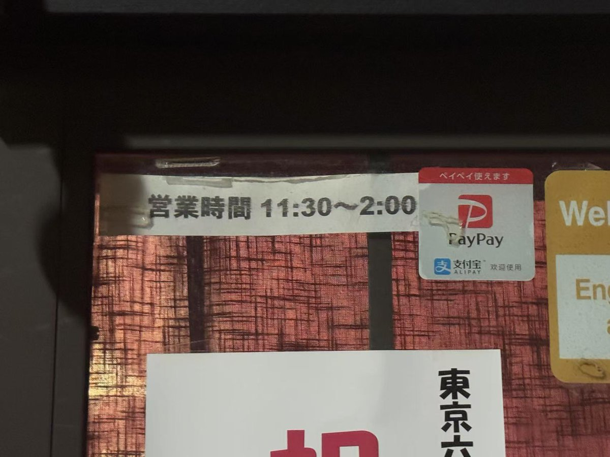
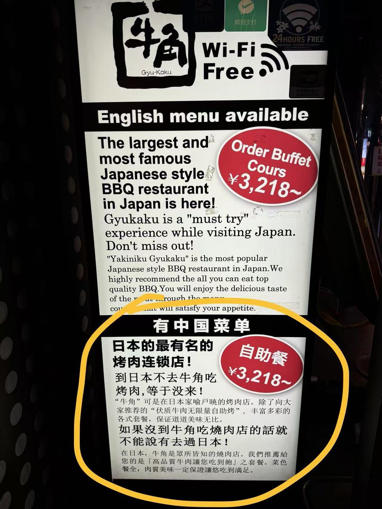
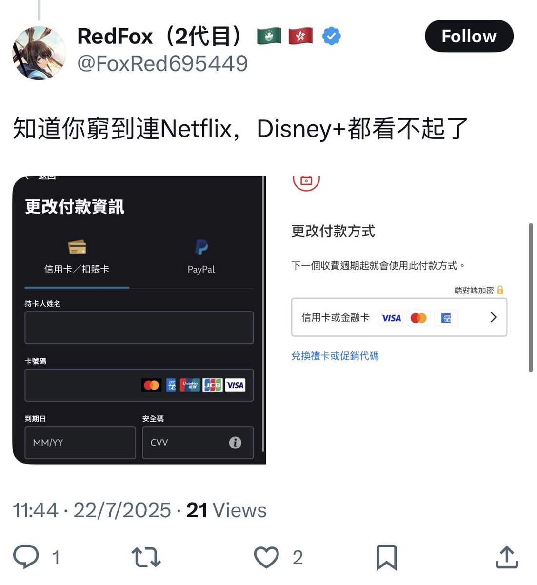

RedFox（2代目）🇲🇴🇭🇰
@FoxRed695449
@Nohomework0 @715zhgunmu8964 @jianlvup



双层牛肉汉堡
@Nohomework0
@FoxRed695449 @715zhgunmu8964 @jianlvup 不好意思哦，至少我在steam上可以微信支付，在日本用微信也还挺多的呢。我人在日本所以拍的照片也都是日本的喔。可能你在香港太久了没有看到外面的世界的变化 https://t.co/3KcD8AgMcJ
双层牛肉汉堡
@Nohomework0
@FoxRed695449 @715zhgunmu8964 @jianlvup 那请麻烦你给我找出这个帖子之前，我人身攻击你的内容。记住是之前哦 https://t.co/Fr0scwig7x